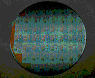

ENGS 194 Lab - Microfabrication Project

1. Performed in Fall 1995 by:
Course Professor:
Laboratory Instructor:
2. Objective:
The objective of this lab is to create integrated circuits which include Enhancement Mode N-channel MOSFETS, capacitors, and ring oscillators. We shall build these devices using the facilities at the Solid State Lab in Thayer School. We will be gaining experience with the process steps which are crucial to the microelectronics industry, namely oxidation, photolithography, wet etching, deposition, ion implantation, and annealing.
3. The Process:
Click on any picture for more information
- WEEK 1: Wafer clean and oxidation (Oct 3, 1995)

- WEEK 2: Photomask #1: MOAT isolation definition (Oct 10, 1995)

- WEEK 3: Gate Oxide and Polysilicon Deposition (Oct 17, 1995)

- WEEK 4a: Annealing and Photomask #2: Gate Definition (Oct 24, 1995)

- WEEK 4b: Polysilicon Etch (Supplemental) (Oct 27, 1995)

- WEEK 4c: Ion Implantation (Done in California) (Oct 28-31, 1995)

- WEEK 5: Implant Activation; Grow Isolation Oxide; Photomask #3: Contact definition (Nov 7, 1995)

- WEEK 6: Metal Deposition (Nov 14, 1995)

- WEEK 7: Photomask #4: Metal line definition (Nov. 21, 1995)

- WEEK 8: MOSFET Measurements (Nov. 28, 1995)
4. Results:
5. Conclusions:
A. The wafers looked good under the optical microscope
B. Electrical Test Results imply bad contact or failure of dopants to diffuse under the gate in MOSFETS
C. Clearly, IV curves imply that there is NO diode behavior here since the IV should be exponential, not linear
D. After looking under the electron microscope, we concluded that not enough Aluminum was deposited to make a good electrical contact with the poly-silicon gate for one wafer and the other wafer was misaligned
E. Hence, the wafer MOSFETs did not operate since there were bad connections between the metal contacts and the poly-silicon gates
F. We may have overetched the aluminum, the photoresist #4 could have receded too much, or simply not deposited enough Aluminum
G. If we strip the aluminum, redeposit it, and redefine it photolithographically, the MOSFETs should work properly.
6. MASKS